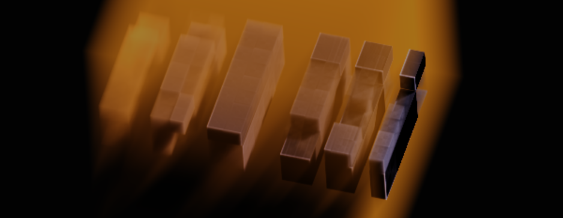
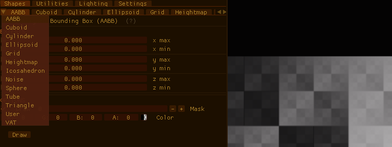
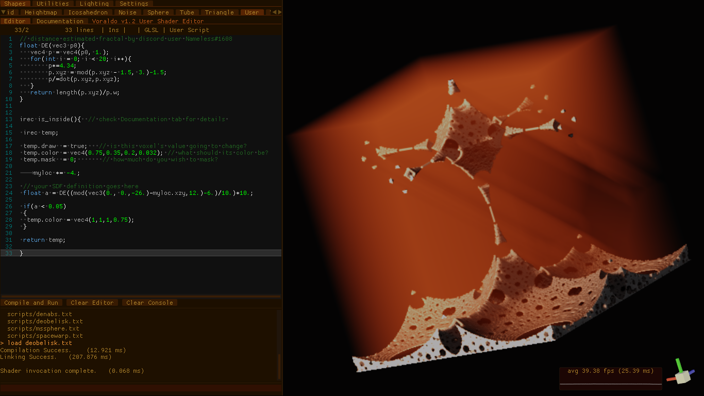
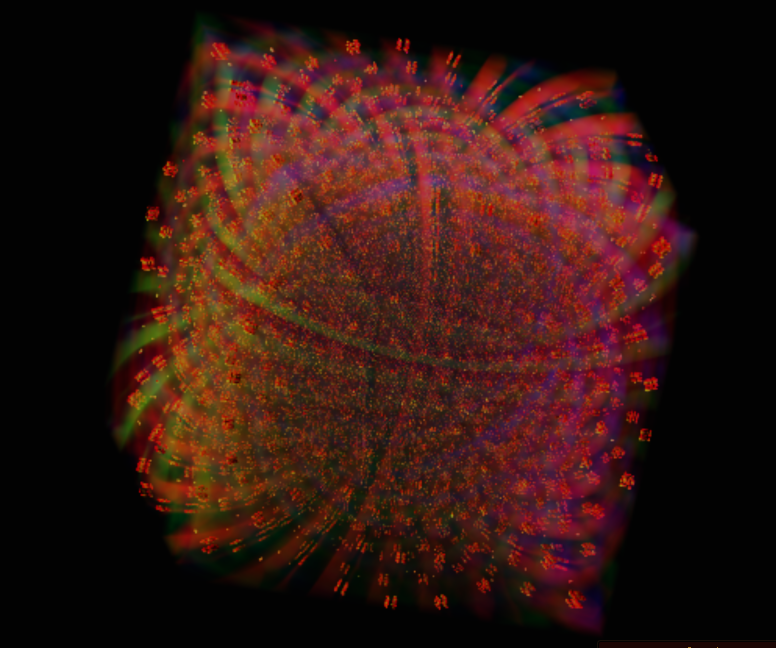
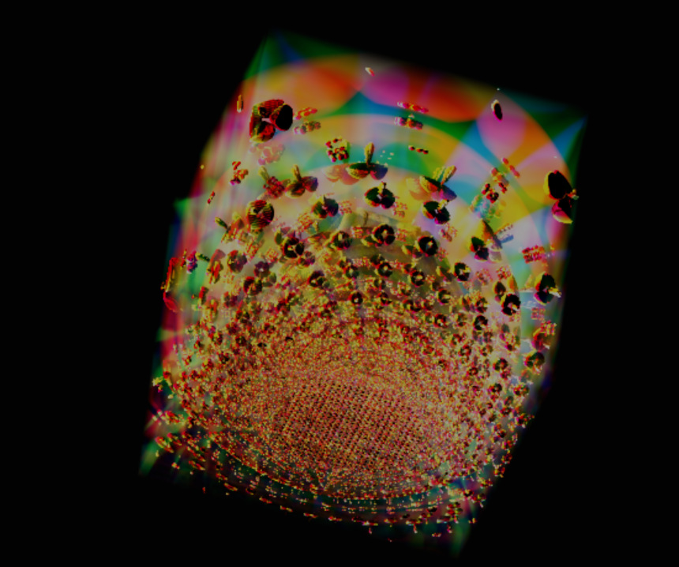
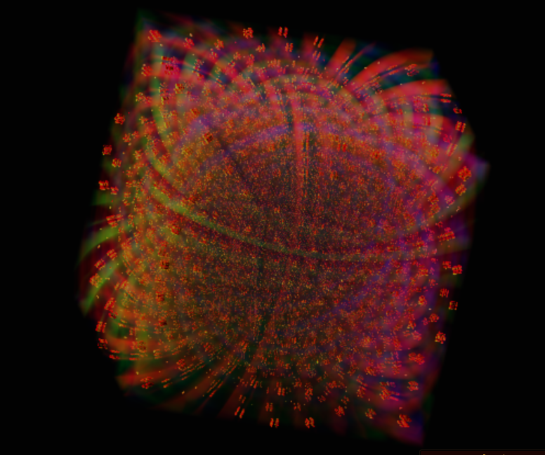
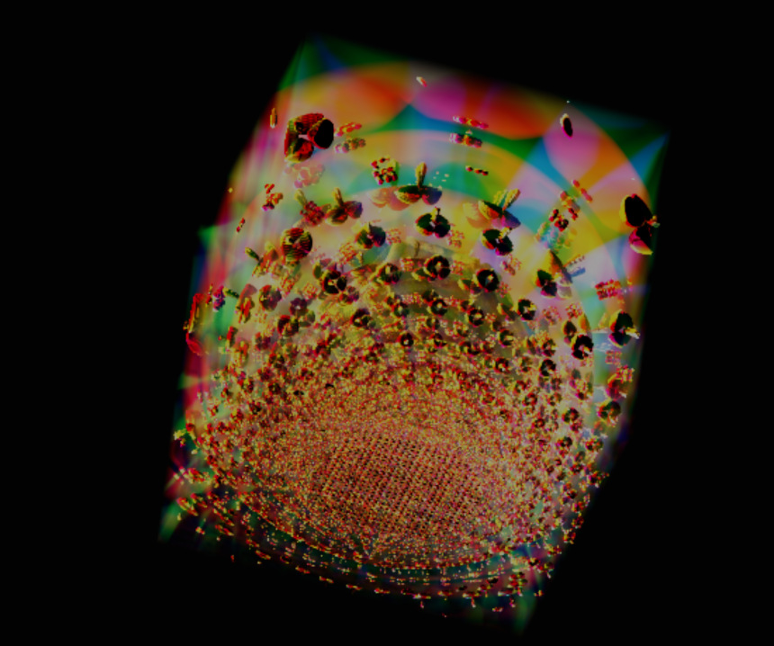
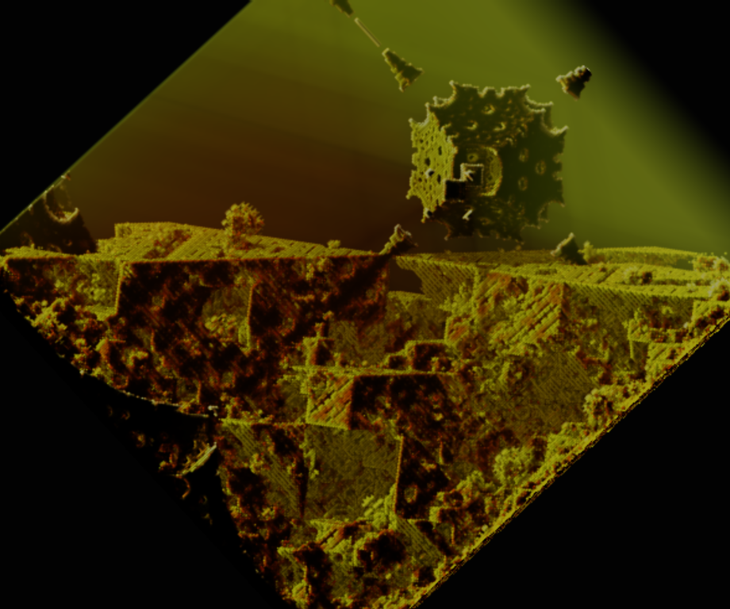
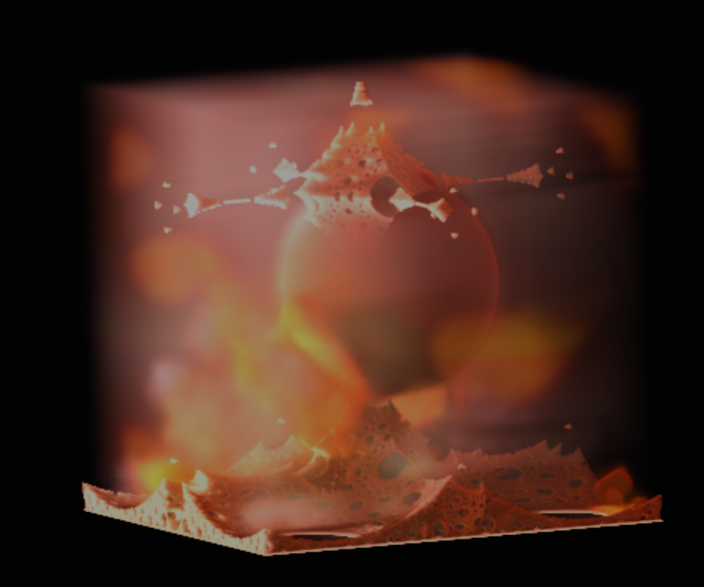

Voraldo v1.2
The continuation of the Voraldo Interactive Volume (Voxel) Editor project
Recording of GPVM Presentation of v1.2 Features Available Here
Changes and Improvements
There have been a number of improvements from v1.1 to v1.2 - the details of which will be explained below:
- RGB Lighting buffer
- 8-bit grayscale masking
- ACES Tonemapping and color temperature adjustment
- Single triangle screen coverage for efficiency
- Integrated operation logging/JSON scripting interface (animation)
- Renderer using mipmapped samplers
- Small improvements on the use of the render texture
- ImGUI Docking Branch and improved tab interface
- Noise generation with FastNoise2
- Cmake config done for eventual Windows build
- In-engine user editable shader for arbitrary SDFs and Fractals
RGB Lighting
Because running more than one on a page seems to lag, the video at the top autoplays, this starts paused. Pause the top one before playing this if you have any issue.
This has been a major improvement in the possibilities of the types of images you are able to produce with this program. Previously, a single channel was provided for lighting intensity, and that single value uniformly scaled all three components of the color buffer when rendering. Now, there exists indpendent scale factors for each channel. There is still an issue with clipping, which I intend to fix by converting to a floating point texture and removing the 4.0f scale factor that currently exists in the raycast code. This will also require that the tonemapping is moved from the blit shader to the raycast shader, so that it happens before the data has been stored in the render texture. This will fix the issue of the tonemapping creating too dark an image, since I won't have to deal with these values being clamped to the range [0.-1.] when the values are passed through a texture. These changes will be a little complicated, there are a few moving parts - it requires changes in about 6 places in the code.
Grayscale Masking
This has really been a major improvement, and it is fully a superset of the previous masking functionality. Basically, now, instead of a bool which tells whether or not a cell can be written to, there is a value in the range 0-255. This controls the blending of the existing raster data with data which would be applied by subsequent drawing commands. A value of zero indicates that it will be fully overwritten, where a value of 255 indcates that the existing raster data is fully retained. as you can see in the image above, the pieces of XOR texture have been masked to a varying degree, increasing from left to right. When the XOR texture is then overwritten by a drawing operation that puts a low-alpha value all through the volume, you can see the varying degree to which that information is retained. In order to achieve the old functionality, you simply mask with 255 any time you want to mask.
Tonemapping and Color Temp Adjustment

I encourage you to read about tonemapping here - it is a way of remapping color values from HDR to LDR (as presented onscreen), often employed for stylistic effects. You can see how the tonemapping operations are dimming the colors a little too much. This is the main motivation for my decision to convert to floating point lighting textures, effectively to give myself the ability to compensate for this by giving it more light.
Color temperature adjustment may be a little more familiar for most people. The method I'm using has some code to generate a color for a given color temperature - this is a 3-tuple, r, g, and b. I then use this as a scale factor for the r, g, and b values by constructing an identity matrix with the diagonal scaled by the tuple. Shown above is a comparison grid - it is higher resolution if you view the image directly - the first row is linear color values, second row is a cheap ACES approximation, and the third row is the full UE4 style ACES tonemapping implementation. From left to right, the values go from cool (1800K, orange) to neutral (6500K, white) and then to warmer (18000K, blue).
Single Fullscreen Triangle
This is a simple fix, as a single fullscreen primitive is more efficiently evaluated than two triangles which split the screen along the diagonal. The reason for this is that the primitives are handled in hardware by groups of pixels, and it is most efficiently done when all pixels in that group arrive at the same result. According to sources, this is up to a 10% performance improvement. Although the part of my program where this is applied was not really a major bottleneck, it seems like this is much better practice.
JSON Operation Logging and Parsing
This is very powerful - every time you click a button to do something on the GPU, a JSON-encoded record of the function call is added to a list of all operations that have happened this session. The list can be cleared at any time or dumped to a text file, where you will be able to access these formatted commands.
There is support for an animation system, as well - this is formatted as a JSON file, containing a list of these operations. The first section is a list of 'setup' operations, which can be retained for the rest of the animation without popping in on the second frame. Following this, there is a list of operations which will specify the operations you want to perform per-frame. These capabilities include all the drawing operations, all the utility operations, etc - even the user shader, which takes a string, compiles a shader out of it (with a header before and some logic following it), and runs it. After a frame's operations are finished, it dumps a png, framexxxx.png, to a folder. This facilitates the creation of the frame-perfect looping animations you see on this page, which have been stitched together from frames by ffmpeg.
By using glReadPixels, getting the frames from the OpenGL back buffer is easy. This takes advantages of all the work I've done on the renderer by grabbing the exact pixel values that would have ended up on the screen (e.g. after the filtered render texture sampling, explained below).
Renderer and Render Texture Improvements
The cooperation between the tile-based renderer and my sampling scheme has proved to be very powerful for producing a smooth image. I have talked about this before, but will quickly go over the current state of the whole procedure here. The first thing to be considered is the render texture. It is the medium by which an image is put to the screen. There is a scale factor which determines how many times the size the width and height of the screen that this render texture will be. If the number is less than one, a single pixel in the render texture will span more than one pixel in the output - correspondingly, a value greater than one means that there will be effective supersampling - that is, multiple render texture pixels taken into consideration when calculating an output pixel. Because of the limitation on compute shader job dispatch siZe, the tile based renderer is used, where 256x256 squares across the texture are populated with color data at a time. This is very fast, since there is no synchronization required between these squares. Each compute shader invocation does the alpha blending calculation with a number of mipmapped linearly filtered samples of the voxels, acquired here using a sampler3D interface instead of the image3D used by the read/write operations (drawing, etc).
That's the expensive part. There are a large number of texture reads, for each texel in the render texture. There is really no reason to go through the expense of updating these calculations every frame - this is one of the core optimizations which makes my approach functional even with the wide range of hardware capability that exists between an Intel integrated chip sharing system RAM and a Radeon card with 16 gigabytes of dedicated VRAM. By only invoking this behavior when there is a change in the volume, whether that is a change in the color data, lighting data, orientation of the block, x or y screen offsets, or some other render settings, the only job which is required of the program each frame is to present the data already present in the render texture.
The process of presentation also has some more considerations than may first be apparent. There is a simple fullscreen triangle, as previously described, and a simple vertex/fragment pair which draws it. By setting up 8x multisample buffers via OpenGL, my fullscreen triangle now runs my fragment shader 8 times for every screen pixel. In each of these shader invocations, I take a linearly filtered sample from the render texture, using gl_FragCoord + gl_SamplePosition to take advantage of the multisample offset when sampling the texture. Thus the final output pixel is produced, as an average of these samples.
ImGUI Docking Branch
The interface has improved markedly, with a few little things I've found digging through the dear ImGUI codebase. First thing, shown here, is the use of a dropdown to swap between tabs that would have scrolled off the side.
The color scheme and some of the layout flags have changed a little - I have them in a text file here. I also found a very good text editor extension for dear ImGUI, which includes syntax highlighting and a lot of other features. The combination of this and an adapted version of the console demo project make up the core of the user scripting interface, shown below (colors subject to change - shown here with a 256 resolution voxel block, running on my Thinkpad x240's Intel HD4400 integrated chip at 1600x900 with 0.64x supersampling).
Noise Generation with FastNoise2
This is a highly configurable noise tool, which provides a standalone application that allows you to compose many operations to create a noise texture exactly to your liking. When you have it the way you want in the node graph, it provides a string that encodes that node setup. You can give this to the library in order to create the noise texture you specified with that set of nodes. There was some trouble with the ImGUI implementation for SDL/Magnum integration on linux, so I sent a pull request to the maintainer of that project to add a button to dump the string to the command line.
I have had a few issues with the actual runtime execution speed of this library, I believe it is related to the use of AVX instructions (or rather that for some reason, they are not being used). I believe it is something on my end - this is something I need to dig into more later. For the time being, I have two other options for noise, my standalone header and the routines provided by GLM.
Cmake Config Done - Windows Build Soon
Up to now, I have had an issue with drivers other than Mesa - when compiling on different systems with different drivers, there was an issue with image3D access. I believe I have a line on this issue, due to the help of one of the people involved with FastNoise2 - they got it to compile on Windows pretty simply with the Cmake config, but then they were unable to manipulate textures. They ran it through the Nvidia Nsight profiler, which said something about incomplete textures - I believe this has to do with the use of a NULL value as the last argument to glTexImage3D. Something like an optimization where there is no allocation of backing memory when there is no data passed. I need to get ahold of them again and see if my fixes have made a difference.
User Shader and Fractals
 

This is one of the coolest parts of the v1.2 changes - shown above are a few samples of fractals that have been created using the User Shader. A simple abstraction is provided, where by each shader invocation has a unique value for 'myloc' inside of a volume that stretches from -1 to 1 on each axis. This can be easily scaled to cover more or less space. I have been studying Signed Distance Fields (SDFs) quite heavily, and some associated transforms of space. I have found a number of operations which fold space in intersting ways, including spherical inversions, plane folds, and a number of others. These translate the space in a highly nonlinear way - when you then use the transformed value of myloc in the SDF of a simple object, the effect of the folded space manifests as a fractal. There is a lot more to this discussion than makes sense to get into here, and many, many online resources related to the use and transformation of SDFs. Below are a few models built on the obelisk fractal shown in the editor above.
